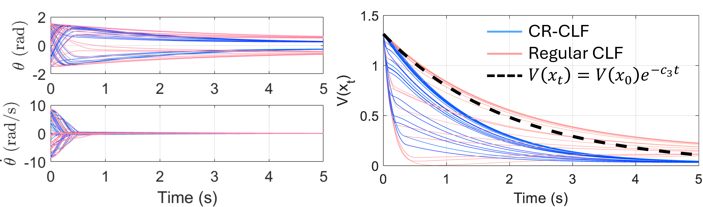
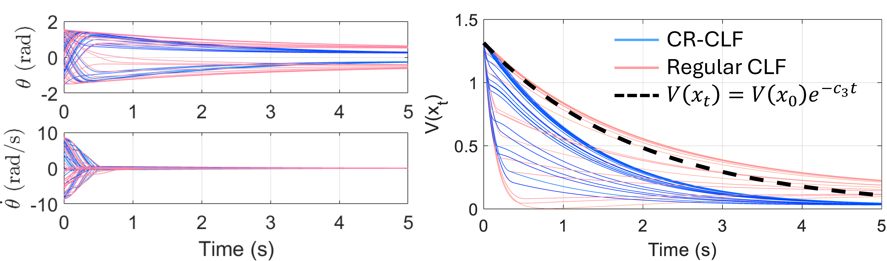
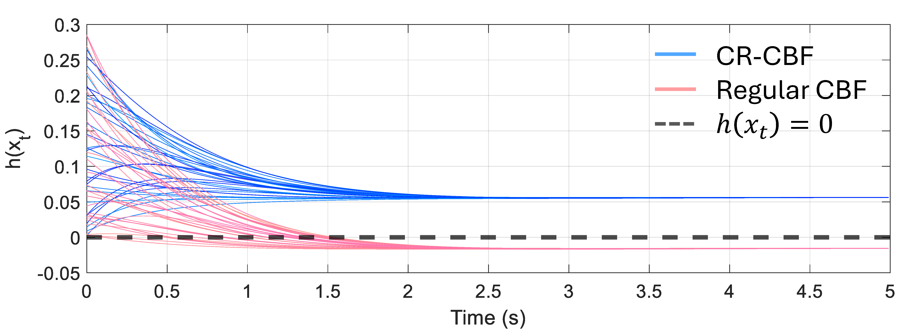
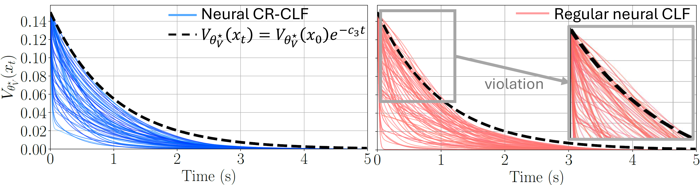
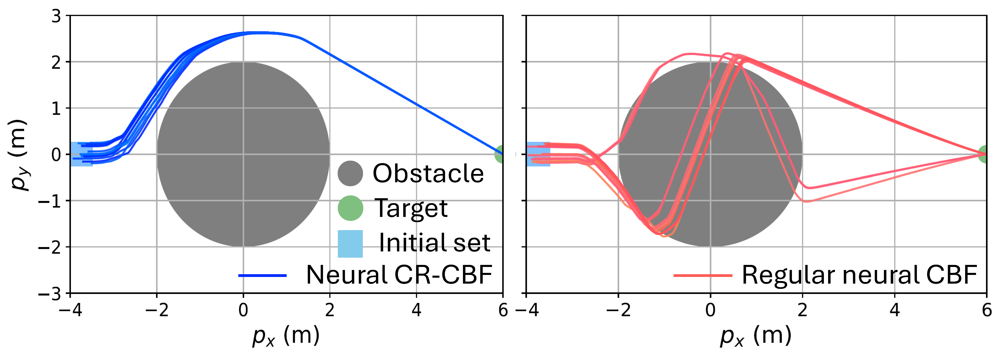

Inverted Pendulum
Using nerfies you can create fun visual effects. This Dolly zoom effect would be impossible without nerfies since it would require going through a wall.
We present a true-dynamics-agnostic, statistically rigorous framework for establishing exponential stability and safety guarantees of closed-loop, data-driven nonlinear control.
Central to our approach is the novel concept of conformal robustness, which robustifies the Lyapunov and zeroing barrier certificates of data-driven dynamical systems against model prediction uncertainties using conformal prediction. It quantifies these uncertainties by leveraging rank statistics of prediction scores over system trajectories, without assuming any specific underlying structure of the prediction model or distribution of the uncertainties.
With the quantified uncertainty information, we further construct the conformally robust control Lyapunov function (CR-CLF) and control barrier function (CR-CBF), data-driven counterparts of the CLF and CBF, for fully data-driven control with statistical guarantees of finite-horizon exponential stability and safety. The performance of the proposed concept is validated in numerical simulations with four benchmark nonlinear control problems.
Using nerfies you can create fun visual effects. This Dolly zoom effect would be impossible without nerfies since it would require going through a wall.
As a byproduct of our method, we can also solve the matting problem by ignoring samples that fall outside of a bounding box during rendering.
Using nerfies you can create fun visual effects. This Dolly zoom effect would be impossible without nerfies since it would require going through a wall.
As a byproduct of our method, we can also solve the matting problem by ignoring samples that fall outside of a bounding box during rendering.
@ARTICLE{conformal_robustness,
author={Hsu, Ting-Wei and Tsukamoto, Hiroyasu},
journal={IEEE Control Systems Letters},
title={Statistical Guarantees in Data-Driven Nonlinear Control: Conformal Robustness for Stability and Safety},
year={2025},
volume={9},
pages={997-1002},
doi={10.1109/LCSYS.2025.3578062}}